Activity: Copying, rotating, and attaching a feature to a new location
This activity guides you through the process of copying a feature, aligning the feature to an angled face, and then positioning the feature on the model. Use two methods in the activity.
Click here to download the activity file.
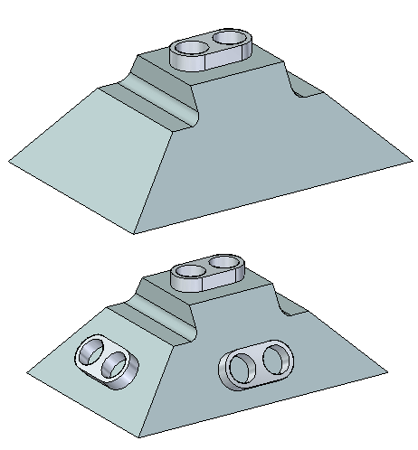
-
Open rotate.par.
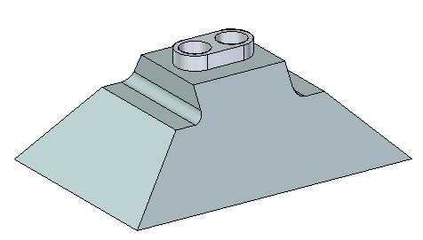
Use the Copy option on command bar. Align the feature using the Parallel relationship command. Position the feature using the steering wheel. Copy feature (1) onto face (2). Center feature on face (2) with the feature holes aligned to the midpoint of edge (3).
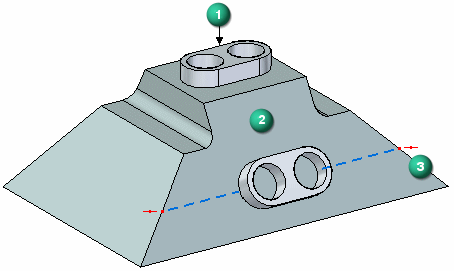
In PathFinder, select the feature named Protrusion 1.
On the command bar, choose the Copy
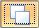
option.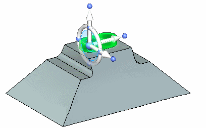
How to use the Design Intent panel is presented in the help topic, Working with geometric relationships. At this time just suspend the Design Intent setting in the Design Intent panel while moving the cutout feature. This ensures no other faces in the model participate in the move.
-
On the Design Intent panel, uncheck the Design Intent (1) option.

Click the axis to start the move command.
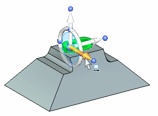
In the dynamic edit box, type 125 and press the Enter key.
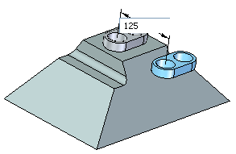
On the Home tab→Face Relate group, choose the Parallel relationship command  .
.
The Face Relationship commands are covered in the Working with relationships activity. Use the command to change the angle of the copied feature. You could use the steering wheel to rotate the feature but you need to know the angle of the face. The parallel relationship command is an easier step.
On the Parallel command bar, make sure the Single Align option is set.
When selecting the Parallel command, face (1) is the seed face. Select the face (2) to redefine the seed face.
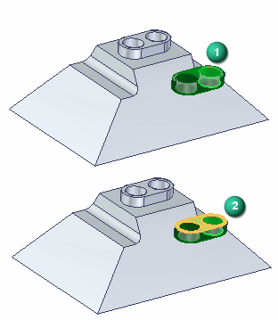
Select the angled face.
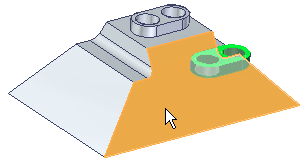
Turn off the Persist option and click the Accept button on command bar. Press the Escape key.
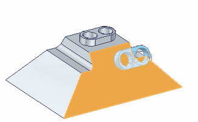
The feature aligns parallel with the angled face.
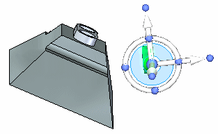
The first move aligns the feature with a midpoint of an edge.
Move the steering wheel origin to the center of one of the cylindrical faces as shown.
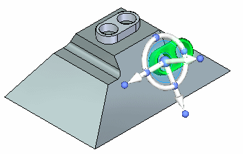
Click the axis shown.
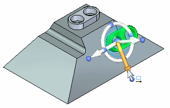
Select the midpoint of the edge shown.
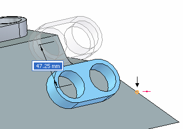
If you cannot locate the midpoint on the edge, make sure the All keypoints option is ON.
The second move aligns the bottom of the feature with the face.
Move the steering wheel origin to any point on the bottom of the feature.
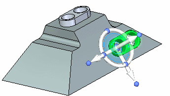
Click the axis and then select the endpoint shown.
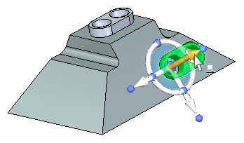
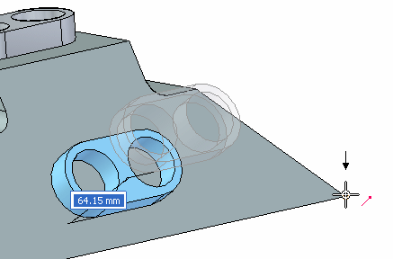
-
Right-click the part window and choose Attach.
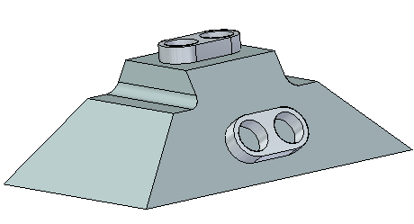
This completes the first method of copying, aligning, and positioning a feature.
Use the Copy to and Paste from clipboard commands. Use the shortcut keys Ctrl+C (copy) and Ctrl+V (paste). Align the feature using the F3 key. Position the feature using the steering wheel. Copy feature (1) onto face (3). Center feature on face (3) with the feature holes aligned to the midpoint of edge (2).
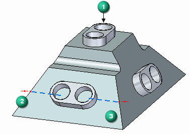
To copy a selected feature to the clipboard, press Crtl+C.
To paste a feature from the clipboard, press Crtl+V.
You can also choose the commands from the Home tab→Clipboard group.
In PathFinder, select the feature named Protrusion 1.
Position the steering wheel origin at any point on the bottom of the feature. This comes into play when the feature aligns to the target angled face. Make sure the normal axis points in the direction shown.
The normal axis orients normal to the face pasted to.
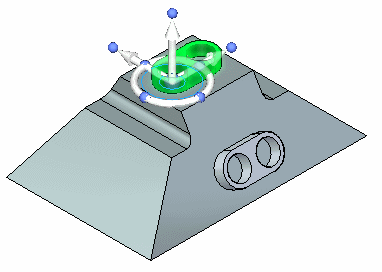
Press Ctrl+C to copy the selected feature to the clipboard.
Press Ctrl+V to paste the feature. The feature attaches to the cursor.
Drag the cursor over the face shown.
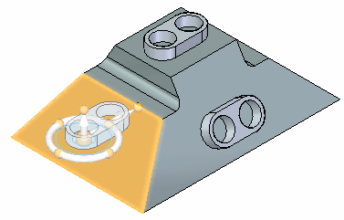
Press the F3 key to coplanar align the steering wheel face to the angled face. This is the reason you position the steering wheel to a point on the bottom of the feature in an earlier step.
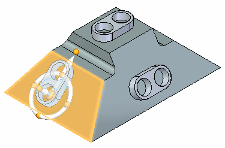
Click to place the feature.
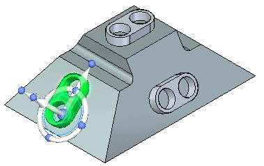
Position the steering as shown and click the steering wheel torus.
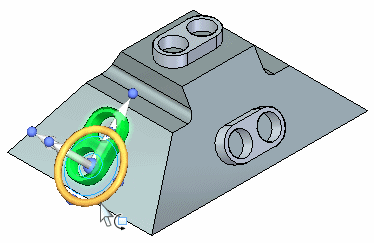
In the dynamic edit box, type 90 and then press the Enter key.
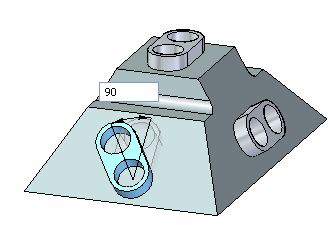
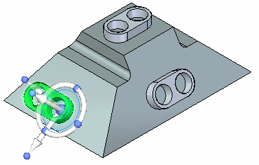
Move the steering wheel origin to the midpoint of a linear edge on the feature.
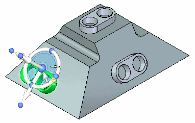
Click the axis shown to define the move direction.
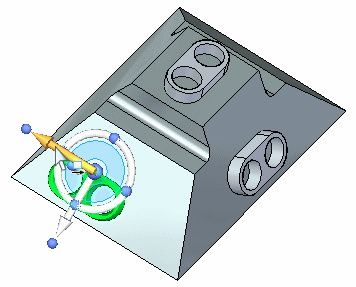
Click the midpoint on the edge shown.
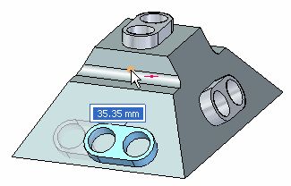
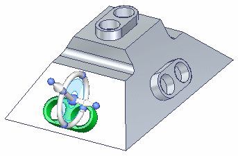
Move the steering wheel origin to the center of a cylindrical face on the feature and then click the axis shown to define move direction.
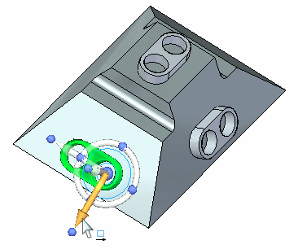
Click the midpoint of the edge.
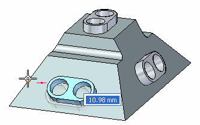
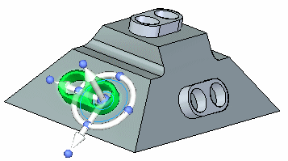
-
Right-click the part window and choose Attach.
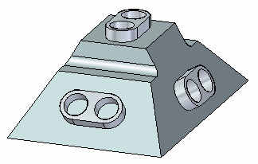
This completes the activity.
In this activity you learned how to copy, align, and position a feature. Two methods were shown to help you understand the available tools for copying geometry.
-
Click the Close button in the upper-right corner of the activity window.